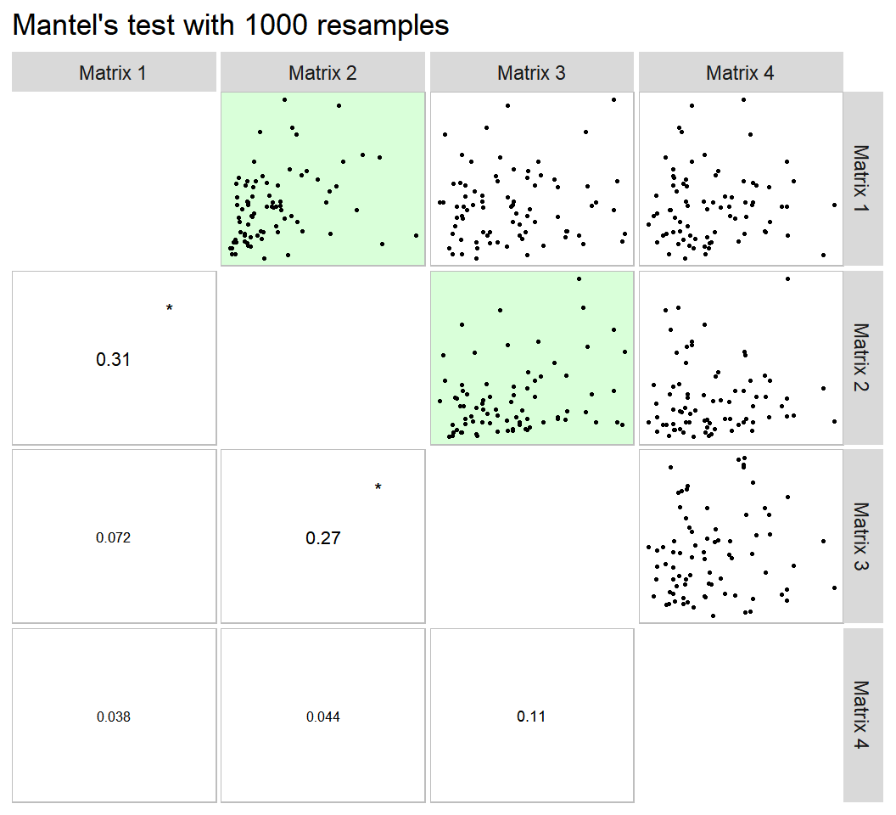
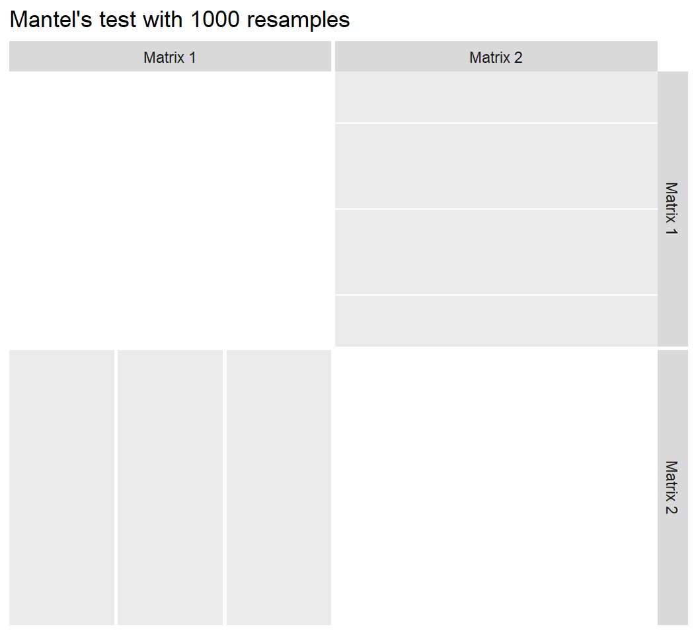

Useful functions for biometrical models
Tiago Olivoto
2020-03-09
Source:vignettes/vignettes_biometry.Rmd
vignettes_biometry.RmdFind possible outliers in a data frame
The function find_outlier() may be used to identify possible outliers in a dataframe. It is suggested that before applying any statistical procedures, outliers be checked out.
library(metan)
data_out <- data_ge2
data_out[12, 4] = 5
find_outliers(data_out, var = PH, plots = TRUE)
# Number of possible outliers: 1
# Line(s): 12
# Proportion: 0.6%
# Mean of the outliers: 5
# Maximum of the outliers: 5 | Line 12
# Minimum of the outliers: 5 | Line 12
# With outliers: mean = 2.499 | CV = 15.58%
# Without outliers: mean = 2.483 | CV = 13.46%
To check the outliers in different levels of a factor, use the argument by. As an example, we will find possible outliers for each level of the factor ENV.
find_outliers(data_ge2, PH, by = ENV)
# No possible outlier identified.
#
# No possible outlier identified.
#
# Number of possible outliers: 4
# Line(s): 7 11 14 15
# Proportion: 11.4%
# Mean of the outliers: 2.438
# Maximum of the outliers: 2.766 | Line 11
# Minimum of the outliers: 1.71 | Line 7
# With outliers: mean = 2.167 | CV = 10.309%
# Without outliers: mean = 2.136 | CV = 7.377%
#
# No possible outlier identified.
# ENV outliers
# 1 A1 0
# 2 A2 0
# 3 A3 4
# 4 A4 0To group by more than one variable, use the function group_by() is used.
data_ge2 %>%
group_by(ENV) %>%
find_outliers(PH)
# No possible outlier identified.
#
# No possible outlier identified.
#
# Number of possible outliers: 4
# Line(s): 7 11 14 15
# Proportion: 11.4%
# Mean of the outliers: 2.438
# Maximum of the outliers: 2.766 | Line 11
# Minimum of the outliers: 1.71 | Line 7
# With outliers: mean = 2.167 | CV = 10.309%
# Without outliers: mean = 2.136 | CV = 7.377%
#
# No possible outlier identified.
# ENV outliers
# 1 A1 0
# 2 A2 0
# 3 A3 4
# 4 A4 0Correlations
Linear and partial correlation coefficients
Pearson’s linear correlation does not consider the influence a set of traits on the relationship between two traits. For example, the hypothetical correlation of r = 0.9 between x and y may be due to the influence of a third trait or group of traits acting together. To identify this linear effect between x and y controlling statistically the effect of others traits, the partial correlation is used. From Pearson’s simple correlation matrix, the partial correlation is calculated by the following equation:
\[ {r_{xy.m}} = \frac{{ - {a_{xy}}}}{{\sqrt {{a_{xx}}{a_{yy}}} }} \]
Where \({r_{xy.m}}\) is the partial correlation coefficient between the traits * x * and * y , excluding the effects of the m * remaining traits of the set; \(- {a_{ij}}\) is the inverse element of the correlation matrix corresponding to xy, \({a_{ii}}{a_{jj}}\) are the diagonal elements of the inverse matrix of correlation associated with trait x and y , respectively. The significance of this correlation is also tested by the test * t * according to the following expression:
\[ t_{calc} = r_{xy.m} \sqrt \frac{n-v}{1-r_{xy.m}^2} \]
Where \(t_{calc}\) is the calculated Student * t * statistic; $ r_{xy.m} $ is the partial correlation coefficient for the traits x and y excluding the effect of the other * m * traits; * n * is the number of observations; and * v * is the number of traits. Both the linear and partial correlation coefficients may be obtained using the function lpcor().
lpc1 <-
data_ge2 %>%
select(starts_with("N")) %>%
lpcor()
print_table(as.data.frame(lpc1))
# Compute the correlations for each level of the factor ENV
lpc2 <- lpcor(data_ge2, by = ENV)
print_table(lpc2)Using the pairs_mantel() function, it is possible to compute a Mantel’s test (Mantel 1967) for all pairwise correlation matrices of the above example.
lpc2 %>% pairs_mantel(names = paste("H", 1:4, sep = ""))
This same plot may be obtained by passing correlation matrices with the same dimension to an object of class lpcor and then applying the function pairs_mantel().
as.lpcor(cor(data_ge2[1:30, 5:ncol(data_ge2)]),
cor(data_ge2[31:60, 5:ncol(data_ge2)]),
cor(data_ge2[61:90, 5:ncol(data_ge2)]),
cor(data_ge2[91:120, 5:ncol(data_ge2)]),
cor(data_ge2[121:150, 5:ncol(data_ge2)])) %>%
pairs_mantel(diag = TRUE,
pan.spacing = 0,
shape.point = 21,
col.point = "black",
fill.point = "red",
size.point = 1.5,
alpha.point = 0.6,
main = "My own plot",
alpha = 0.2)
Graphical and numerical visualization of a correlation matrix
The function corr_coef() can be used to compute Pearson producto-moment correlation coefficients with p-values. A correlation heat map can be created with the function plot().

We can use a select helper function to select variables. Here, we will select variables that starts with “C” OR ends with “D” using union_var().
ccoef2 <- corr_coef(data_ge2, union_var("C", "D"))
print(ccoef2, digits = 2)
# ---------------------------------------------------------------------------
# Pearson's correlation coefficient
# ---------------------------------------------------------------------------
# CL CD CW CDED ED
# CL 1.00 0.300 0.74 0.708 0.70
# CD 0.30 1.000 0.48 0.045 0.39
# CW 0.74 0.484 1.00 0.300 0.74
# CDED 0.71 0.045 0.30 1.000 -0.01
# ED 0.70 0.390 0.74 -0.010 1.00
# ---------------------------------------------------------------------------
# p-values for the correlation coefficients
# ---------------------------------------------------------------------------
# CL CD CW CDED ED
# CL 0.0e+00 1.4e-04 3.9e-28 4.9e-25 4.7e-24
# CD 1.4e-04 0.0e+00 1.5e-10 5.7e-01 4.9e-07
# CW 3.9e-28 1.5e-10 0.0e+00 1.4e-04 5.3e-28
# CDED 4.9e-25 5.7e-01 1.4e-04 0.0e+00 9.0e-01
# ED 4.7e-24 4.9e-07 5.3e-28 9.0e-01 0.0e+00The function corr_plot() may be used to visualize (both graphically and numerically) a correlation matrix. Pairwise of scatterplots are produced and may be shown in the upper or lower diagonal, which may be seen as a nicer and customizable ggplot2-based version of the pairs()base R function.
a <- corr_plot(data_ge2, CD, EL, PERK, NKR)
b <-
corr_plot(data_ge2, CD, EL, PERK, NKR,
lower = NULL,
upper = "corr")
c <-
corr_plot(data_ge2, CD, EL, PERK, NKR,
shape.point = 19,
size.point = 2,
alpha.point = 0.5,
alpha.diag = 0,
pan.spacing = 0,
diag.type = "boxplot",
col.sign = "gray",
alpha.sign = 0.3,
axis.labels = TRUE)
d <-
corr_plot(data_ge2, CD, EL, PERK, NKR, CW, NKE,
prob = 0.01,
shape.point = 21,
col.point = "black",
fill.point = "orange",
size.point = 2,
alpha.point = 0.6,
maxsize = 4,
minsize = 2,
smooth = TRUE,
size.smooth = 1,
col.smooth = "black",
col.sign = "cyan",
col.up.panel = "black",
col.lw.panel = "black",
col.dia.panel = "black",
pan.spacing = 0,
lab.position = "tl")
arrange_ggplot(a, b, c, d, labels = letters[1:4])The function corr_coef() can be used to compute Pearson producto-moment correlation coefficients with p-values. A correlation heat map can be created with the function plot()
(co)variance and correlations for designed experiments
The function covcor_design() may be used to compute genetic, phenotypic and residual correlation/(co)variance matrices through Analysis of Variance (ANOVA) method using randomized complete block design (RCBD) or completely randomized design (CRD).
The phenotypic (\(r_p\)), genotypic (\(r_g\)) and residual (\(r_r\)) correlations are computed as follows:
\[ r^p_{xy} = \frac{cov^p_{xy}}{\sqrt{var^p_{x}var^p_{y}}} \\ r^g_{xy} = \frac{cov^g_{xy}}{\sqrt{var^g_{x}var^g_{y}}} \\ r^r_{xy} = \frac{cov^r_{xy}}{\sqrt{var^r_{x}var^r_{y}}} \]
Using Mean Squares (MS) from the ANOVA method, the variances (var) and covariances (cov) are computed as follows:
\[ cov^p_{xy} = [(MST_{x+y} - MST_x - MST_y)/2]/r \\ var^p_x = MST_x / r \\ var^p_y = MST_y / r \\ cov^r_{xy} = (MSR_{x+y} - MSR_x - MSR_y)/2 \\ var^r_x = MSR_x \\ var^r_y = MSR_y \\ cov^g_{xy} = [(cov^p_{xy} \times r) - cov^r_{xy}]/r \\ var^g_x = (MST_x - MSE_x)/r \\ var^g_y = (MST_x - MSE_y)/r \\ \]
where MST is the mean square for treatment, MSR is the mean square for residuals, and r is the number of replications.
The function covcor_design() returns a list with the matrices of (co)variances and correlations. Specific matrices may be returned using the argument type, as shown bellow.
Genetic correlations
# environment A1
data <- subset(data_ge2, ENV == "A1")
gcor <- covcor_design(data, gen = GEN, rep = REP,
resp = c(PH, EH, NKE, TKW, CL, CD, CW, KW),
type = "gcor") %>%
as.data.frame()
print_table(gcor, rownames = TRUE)Phenotypic correlations
pcor <- covcor_design(data, gen = GEN, rep = REP,
resp = c(PH, EH, NKE, TKW, CL, CD, CW, KW),
type = "pcor") %>%
as.data.frame()
print_table(pcor, rownames = TRUE)Residual correlations
rcor <- covcor_design(data,
gen = GEN,
rep = REP,
resp = c(PH, EH, NKE, TKW, CL, CD, CW, KW),
type = "rcor") %>%
as.data.frame()
print_table(rcor, rownames = TRUE)Residual (co)variance matrix
In this example we will obtain the residual (co)variance for each environment.
cov <- covcor_design(data_ge2,
gen = GEN,
rep = REP,
resp = c(PH, EH, NKE, TKW, CL, CD, CW, KW),
type = "rcov")The residual (co)variance matrix and the means (obtained using type = "means") may be used into the function mahala() to compute the Mahalanobis distance
res <- covcor_design(data, GEN, REP,
resp = c(PH, EH, NKE, TKW, CL, CD, CW, KW),
type = "rcov")
means <- covcor_design(data, GEN, REP,
resp = c(PH, EH, NKE, TKW, CL, CD, CW, KW),
type = "means")
D2 <- mahala(.means = means, covar = res, inverted = FALSE) %>%
as.data.frame()
print_table(D2, rownames = TRUE)Nonparametric confidence interval for Pearson’s correlation
Recently, a Gaussian-independent estimator for the confidence interval of Pearson’s correlation coefficient was proposed by Olivoto et al. (2018). This estimator is based on the sample size and strength of associations and may be estimated using the function corr_ci(). It is possible to estimate the confidence interval by declaring the sample size (n) and the correlation coefficient (r), or using a dataframe. The following code computes the confidence interval and make a plot to show the results.

In the following examples, the confidence interval is calculated by declaring the sample size (n) and the correlation coefficient (r). Using the argument by = ENV the confidence interval can be calculated within each level of the factor ENV.
# Inform n and r
corr_ci(n = 145, r = 0.34)
# -------------------------------------------------
# Nonparametric 95% half-width confidence interval
# -------------------------------------------------
# Level of significance: 5%
# Correlation coefficient: 0.34
# Sample size: 145
# Confidence interval: 0.1422
# True parameter range from: 0.1978 to 0.4822
# -------------------------------------------------
# Compute the confidence for each level of ENV
CI2 <- corr_ci(data_ge2, contains("E"), by = ENV)
# # A tibble: 21 x 5
# Pair Corr CI LL UL
# <chr> <dbl> <dbl> <dbl> <dbl>
# 1 EH x EP 0.839 0.185 0.655 1.02
# 2 EH x EL 0.148 0.320 -0.172 0.467
# 3 EH x ED -0.0385 0.349 -0.387 0.310
# 4 EH x CDED 0.186 0.310 -0.125 0.496
# 5 EH x PERK -0.205 0.306 -0.510 0.101
# 6 EH x NKE -0.324 0.278 -0.602 -0.0458
# 7 EP x EL 0.150 0.319 -0.169 0.469
# 8 EP x ED -0.0840 0.336 -0.420 0.252
# 9 EP x CDED 0.328 0.277 0.0502 0.605
# 10 EP x PERK -0.221 0.302 -0.523 0.0801
# # ... with 11 more rows
# # A tibble: 21 x 5
# Pair Corr CI LL UL
# <chr> <dbl> <dbl> <dbl> <dbl>
# 1 EH x EP 0.899 0.176 0.722 1.08
# 2 EH x EL 0.498 0.242 0.255 0.740
# 3 EH x ED 0.748 0.199 0.549 0.947
# 4 EH x CDED 0.211 0.304 -0.0935 0.515
# 5 EH x PERK 0.0187 0.354 -0.335 0.373
# 6 EH x NKE 0.269 0.290 -0.0217 0.559
# 7 EP x EL 0.365 0.269 0.0960 0.634
# 8 EP x ED 0.600 0.224 0.376 0.823
# 9 EP x CDED 0.249 0.295 -0.0463 0.544
# 10 EP x PERK -0.0505 0.345 -0.396 0.295
# # ... with 11 more rows
# # A tibble: 21 x 5
# Pair Corr CI LL UL
# <chr> <dbl> <dbl> <dbl> <dbl>
# 1 EH x EP 0.844 0.184 0.659 1.03
# 2 EH x EL -0.0977 0.333 -0.430 0.235
# 3 EH x ED 0.363 0.270 0.0935 0.633
# 4 EH x CDED -0.282 0.287 -0.569 0.00544
# 5 EH x PERK 0.126 0.325 -0.199 0.451
# 6 EH x NKE 0.279 0.288 -0.00876 0.567
# 7 EP x EL -0.194 0.308 -0.502 0.114
# 8 EP x ED 0.200 0.307 -0.107 0.507
# 9 EP x CDED -0.00956 0.357 -0.366 0.347
# 10 EP x PERK 0.0365 0.349 -0.313 0.386
# # ... with 11 more rows
# # A tibble: 21 x 5
# Pair Corr CI LL UL
# <chr> <dbl> <dbl> <dbl> <dbl>
# 1 EH x EP 0.781 0.194 0.587 0.975
# 2 EH x EL 0.250 0.295 -0.0446 0.545
# 3 EH x ED 0.404 0.261 0.143 0.665
# 4 EH x CDED 0.143 0.321 -0.178 0.464
# 5 EH x PERK 0.250 0.295 -0.0447 0.545
# 6 EH x NKE 0.246 0.296 -0.0492 0.542
# 7 EP x EL 0.241 0.297 -0.0559 0.538
# 8 EP x ED 0.210 0.304 -0.0942 0.514
# 9 EP x CDED 0.236 0.298 -0.0626 0.534
# 10 EP x PERK 0.156 0.318 -0.162 0.473
# # ... with 11 more rowsSample size planning
corr_ss(r = 0.6, CI = 0.1)
# -------------------------------------------------
# Sample size planning for correlation coefficient
# -------------------------------------------------
# Level of significance: 5%
# Correlation coefficient: 0.6
# 95% half-width CI: 0.1
# Required sample size: 194
# -------------------------------------------------Collinearity diagnostic
The following codes compute a complete collinearity diagnostic of a correlation matrix of predictor traits. Several indicators, such as Variance Inflation Factor, Condition Number, and Matrix Determinant are considered (T. Olivoto et al. 2017; Olivoto T. et al. 2017) The diagnostic may be performed using: (i) correlation matrices; (ii) dataframes, or (iii) an object of class group_factor, which split a dataframe into subsets based on one or more grouping factors.
Using a dataframe
cold2 <- colindiag(data_ge2)Perform the diagnostic for each level of the factor ENV
cold3 <- colindiag(data_ge2 , by = ENV)
Path analysis
Using KW as response trait and all other ones as predictors.
pcoeff <- path_coeff(data_ge2, resp = KW)
# Severe multicollinearity.
# Condition Number = 7865.84
# Please, consider using a correction factor, or use 'brutstep = TRUE'.Declaring the predictor traits
pcoeff2 <-
path_coeff(data_ge2,
resp = KW,
pred = c(PH, NKE, TKW),
verbose = FALSE)
print(pcoeff2)
# ----------------------------------------------------------------------------------------------
# Correlation matrix between the predictor traits
# ----------------------------------------------------------------------------------------------
# # A tibble: 3 x 3
# PH NKE TKW
# * <dbl> <dbl> <dbl>
# 1 1 0.4584 0.5685
# 2 0.4584 1 -0.06516
# 3 0.5685 -0.06516 1
# ----------------------------------------------------------------------------------------------
# Vector of correlations between dependent and each predictor
# ----------------------------------------------------------------------------------------------
# PH NKE TKW
# KW 0.7534439 0.6810756 0.6730371
# ----------------------------------------------------------------------------------------------
# Multicollinearity diagnosis and goodness-of-fit
# ----------------------------------------------------------------------------------------------
# Condition number: 7.1689
# Determinant: 0.4284438
# R-square: 0.981
# Residual: 0.019
# Response: KW
# Predictors: PH NKE TKW
# ----------------------------------------------------------------------------------------------
# Variance inflation factors
# ----------------------------------------------------------------------------------------------
# # A tibble: 3 x 2
# VAR VIF
# <chr> <dbl>
# 1 PH 2.324
# 2 NKE 1.580
# 3 TKW 1.844
# ----------------------------------------------------------------------------------------------
# Eigenvalues and eigenvectors
# ----------------------------------------------------------------------------------------------
# # A tibble: 3 x 4
# Eigenvalues PH NKE TKW
# <dbl> <dbl> <dbl> <dbl>
# 1 1.699 0.7222 0.4223 0.5478
# 2 1.064 -0.01921 -0.7794 0.6262
# 3 0.2370 0.6914 -0.4628 -0.5548
# ----------------------------------------------------------------------------------------------
# Variables with the largest weight in the eigenvalue of smallest magnitude
# ----------------------------------------------------------------------------------------------
# PH > TKW > NKE
# ----------------------------------------------------------------------------------------------
# Direct (diagonal) and indirect (off-diagonal) effects
# ----------------------------------------------------------------------------------------------
# # A tibble: 3 x 3
# PH NKE TKW
# * <dbl> <dbl> <dbl>
# 1 0.02351 0.01078 0.01337
# 2 0.3283 0.7163 -0.04668
# 3 0.4016 -0.04603 0.7063
# ----------------------------------------------------------------------------------------------Selecting traits to be excluded from the analysis.
pcoeff2 <-
path_coeff(data_ge2,
resp = KW,
pred = c(PH, EH, NKE, TKW),
exclude = TRUE,
verbose = FALSE)Selecting a set of predictors with minimal multicollinearity
pcoeff3 <-
path_coeff(data_ge2,
resp = KW,
brutstep = TRUE,
maxvif = 5)
# --------------------------------------------------------------------------
# The algorithm has selected a set of 8 predictors with largest VIF = 3.346.
# Selected predictors: NR PERK EP CDED EL NKR TKW PH
# A forward stepwise-based selection procedure will fit 6 models.
# --------------------------------------------------------------------------
# Adjusting the model 1 with 7 predictors (16.67% concluded)
# Adjusting the model 2 with 6 predictors (33.33% concluded)
# Adjusting the model 3 with 5 predictors (50% concluded)
# Adjusting the model 4 with 4 predictors (66.67% concluded)
# Adjusting the model 5 with 3 predictors (83.33% concluded)
# Adjusting the model 6 with 2 predictors (100% concluded)
# Done!
# --------------------------------------------------------------------------
# Summary of the adjusted models
# --------------------------------------------------------------------------
# Model AIC Numpred CN Determinant R2 Residual maxVIF
# MODEL_1 1127 7 13.67 0.0841 0.933 0.0669 2.59
# MODEL_2 1125 6 12.26 0.1383 0.933 0.0670 2.46
# MODEL_3 1126 5 12.05 0.1989 0.932 0.0683 2.31
# MODEL_4 1138 4 6.40 0.4595 0.925 0.0747 2.13
# MODEL_5 1148 3 1.34 0.9787 0.919 0.0808 1.02
# MODEL_6 1329 2 2.23 0.8555 0.738 0.2616 1.17
# --------------------------------------------------------------------------Compute the analysis for each level of environment
pcoeff4 <-
path_coeff(data_ge2,
resp = KW,
pred = c(PH, EH, NKE, TKW),
by = ENV)
# Weak multicollinearity.
# Condition Number = 5.183
# You will probably have path coefficients close to being unbiased.
# Weak multicollinearity.
# Condition Number = 81.987
# You will probably have path coefficients close to being unbiased.
# Weak multicollinearity.
# Condition Number = 24.788
# You will probably have path coefficients close to being unbiased.
# Weak multicollinearity.
# Condition Number = 10.276
# You will probably have path coefficients close to being unbiased.Canonical correlation analysis
First of all, we will rename the plant-related traits PH, EH EP with the suffix _PLA to show the usability of the select helper contains().
data_cc <- rename(data_ge2,
PH_PLA = PH,
EH_PLA = EH,
EP_PLA = EP)
# Type the variable names
cc1 <- can_corr(data_cc,
FG = c(PH_PLA, EH_PLA, EP_PLA),
SG = c(EL, ED, CL, CD, CW, KW))
# ---------------------------------------------------------------------------
# Matrix (correlation/covariance) between variables of first group (FG)
# ---------------------------------------------------------------------------
# PH_PLA EH_PLA EP_PLA
# PH_PLA 1.0000000 0.9318282 0.6384123
# EH_PLA 0.9318282 1.0000000 0.8695460
# EP_PLA 0.6384123 0.8695460 1.0000000
# ---------------------------------------------------------------------------
# Collinearity within first group
# ---------------------------------------------------------------------------
# ---------------------------------------------------------------------------
# Matrix (correlation/covariance) between variables of second group (SG)
# ---------------------------------------------------------------------------
# EL ED CL CD CW KW
# EL 1.0000000 0.3851451 0.2554068 0.9118653 0.4581728 0.6685601
# ED 0.3851451 1.0000000 0.6974629 0.3897128 0.7371305 0.8241426
# CL 0.2554068 0.6974629 1.0000000 0.3003636 0.7383379 0.4709310
# CD 0.9118653 0.3897128 0.3003636 1.0000000 0.4840299 0.6259806
# CW 0.4581728 0.7371305 0.7383379 0.4840299 1.0000000 0.7348622
# KW 0.6685601 0.8241426 0.4709310 0.6259806 0.7348622 1.0000000
# ---------------------------------------------------------------------------
# Collinearity within second group
# ---------------------------------------------------------------------------
# ---------------------------------------------------------------------------
# Matrix (correlation/covariance) between FG and SG
# ---------------------------------------------------------------------------
# EL ED CL CD CW KW
# PH_PLA 0.3801960 0.6613148 0.3251648 0.3153910 0.5047388 0.7534439
# EH_PLA 0.3626537 0.6302561 0.3971935 0.2805118 0.5193136 0.7029469
# EP_PLA 0.2634237 0.4580196 0.3908239 0.1750448 0.4248098 0.4974193
# ---------------------------------------------------------------------------
# Correlation of the canonical pairs and hypothesis testing
# ---------------------------------------------------------------------------
# Var Percent Sum Corr Lambda Chisq DF p_val
# U1V1 0.630438540 78.617161 78.61716 0.7940016 0.30668 177.29224 18 0.00000
# U2V2 0.163384310 20.374406 98.99157 0.4042083 0.82985 27.97651 10 0.00182
# U3V3 0.008086721 1.008433 100.00000 0.0899262 0.99191 1.21794 4 0.87514
# ---------------------------------------------------------------------------
# Canonical coefficients of the first group
# ---------------------------------------------------------------------------
# U1 U2 U3
# PH_PLA 2.609792 5.490798 7.575090
# EH_PLA -2.559005 -7.646096 -12.812234
# EP_PLA 1.191023 2.428742 6.604968
# ---------------------------------------------------------------------------
# Canonical coefficients of the second group
# ---------------------------------------------------------------------------
# V1 V2 V3
# EL -0.01008726 -1.0481893 0.60553720
# ED 0.14629899 0.7853469 -1.30457763
# CL -0.09112023 -1.2989864 -0.07497186
# CD -0.29105227 1.1513083 -1.50589651
# CW -0.12527616 -0.0361706 0.21180796
# KW 1.16041981 -0.1022916 1.34278026
# ---------------------------------------------------------------------------
# Canonical loads of the first group
# ---------------------------------------------------------------------------
# U1 U2 U3
# PH_PLA 0.9856022 -0.08351129 -0.1470178
# EH_PLA 0.9085216 -0.41771278 -0.0102277
# EP_PLA 0.6319736 -0.71449671 0.3001730
# ---------------------------------------------------------------------------
# Canonical loads of the second group
# ---------------------------------------------------------------------------
# V1 V2 V3
# EL 0.4759982 -0.11260907 -0.2944636
# ED 0.8294407 -0.18663860 -0.4477426
# CL 0.3749015 -0.74801793 -0.4937819
# CD 0.3951578 0.02985218 -0.5415818
# CW 0.6225367 -0.41451273 -0.2698904
# KW 0.9570820 -0.07344796 -0.1498587
# Use select helpers
cc2 <- can_corr(data_cc,
FG = contains("_PLA"),
SG = c(EL, ED, CL, CD, CW, KW))
# ---------------------------------------------------------------------------
# Matrix (correlation/covariance) between variables of first group (FG)
# ---------------------------------------------------------------------------
# PH_PLA EH_PLA EP_PLA
# PH_PLA 1.0000000 0.9318282 0.6384123
# EH_PLA 0.9318282 1.0000000 0.8695460
# EP_PLA 0.6384123 0.8695460 1.0000000
# ---------------------------------------------------------------------------
# Collinearity within first group
# ---------------------------------------------------------------------------
# ---------------------------------------------------------------------------
# Matrix (correlation/covariance) between variables of second group (SG)
# ---------------------------------------------------------------------------
# EL ED CL CD CW KW
# EL 1.0000000 0.3851451 0.2554068 0.9118653 0.4581728 0.6685601
# ED 0.3851451 1.0000000 0.6974629 0.3897128 0.7371305 0.8241426
# CL 0.2554068 0.6974629 1.0000000 0.3003636 0.7383379 0.4709310
# CD 0.9118653 0.3897128 0.3003636 1.0000000 0.4840299 0.6259806
# CW 0.4581728 0.7371305 0.7383379 0.4840299 1.0000000 0.7348622
# KW 0.6685601 0.8241426 0.4709310 0.6259806 0.7348622 1.0000000
# ---------------------------------------------------------------------------
# Collinearity within second group
# ---------------------------------------------------------------------------
# ---------------------------------------------------------------------------
# Matrix (correlation/covariance) between FG and SG
# ---------------------------------------------------------------------------
# EL ED CL CD CW KW
# PH_PLA 0.3801960 0.6613148 0.3251648 0.3153910 0.5047388 0.7534439
# EH_PLA 0.3626537 0.6302561 0.3971935 0.2805118 0.5193136 0.7029469
# EP_PLA 0.2634237 0.4580196 0.3908239 0.1750448 0.4248098 0.4974193
# ---------------------------------------------------------------------------
# Correlation of the canonical pairs and hypothesis testing
# ---------------------------------------------------------------------------
# Var Percent Sum Corr Lambda Chisq DF p_val
# U1V1 0.630438540 78.617161 78.61716 0.7940016 0.30668 177.29224 18 0.00000
# U2V2 0.163384310 20.374406 98.99157 0.4042083 0.82985 27.97651 10 0.00182
# U3V3 0.008086721 1.008433 100.00000 0.0899262 0.99191 1.21794 4 0.87514
# ---------------------------------------------------------------------------
# Canonical coefficients of the first group
# ---------------------------------------------------------------------------
# U1 U2 U3
# PH_PLA 2.609792 5.490798 7.575090
# EH_PLA -2.559005 -7.646096 -12.812234
# EP_PLA 1.191023 2.428742 6.604968
# ---------------------------------------------------------------------------
# Canonical coefficients of the second group
# ---------------------------------------------------------------------------
# V1 V2 V3
# EL -0.01008726 -1.0481893 0.60553720
# ED 0.14629899 0.7853469 -1.30457763
# CL -0.09112023 -1.2989864 -0.07497186
# CD -0.29105227 1.1513083 -1.50589651
# CW -0.12527616 -0.0361706 0.21180796
# KW 1.16041981 -0.1022916 1.34278026
# ---------------------------------------------------------------------------
# Canonical loads of the first group
# ---------------------------------------------------------------------------
# U1 U2 U3
# PH_PLA 0.9856022 -0.08351129 -0.1470178
# EH_PLA 0.9085216 -0.41771278 -0.0102277
# EP_PLA 0.6319736 -0.71449671 0.3001730
# ---------------------------------------------------------------------------
# Canonical loads of the second group
# ---------------------------------------------------------------------------
# V1 V2 V3
# EL 0.4759982 -0.11260907 -0.2944636
# ED 0.8294407 -0.18663860 -0.4477426
# CL 0.3749015 -0.74801793 -0.4937819
# CD 0.3951578 0.02985218 -0.5415818
# CW 0.6225367 -0.41451273 -0.2698904
# KW 0.9570820 -0.07344796 -0.1498587Clustering analysis
Using function clustering()
All rows and all numeric variables from data
d1 <- clustering(data_ge2)Based on the mean for each genotype
mean_gen <-
data_ge2 %>%
means_by(GEN) %>%
column_to_rownames("GEN")
d2 <- clustering(mean_gen)The S3 generic function plot() may be used to plot the dendrogram generated by the function clustering(). A dashed line is draw at the cutpoint suggested according to Mojena (1977).
plot(d2) According to the suggested cutpoint, two clusters are formed. The number of clusters may also be found using intensive computation. I suggest the package pcvlust, an R package for assessing the uncertainty in hierarchical cluster analysis. The implementation may be see below.
According to the suggested cutpoint, two clusters are formed. The number of clusters may also be found using intensive computation. I suggest the package pcvlust, an R package for assessing the uncertainty in hierarchical cluster analysis. The implementation may be see below.
library(pvclust)
# Registered S3 method overwritten by 'pvclust':
# method from
# text.pvclust dendextend
pv_clust <- pvclust(t(d2$data), nboot = 100, method.dist = "euclidean")
# Bootstrap (r = 0.47)... Done.
# Bootstrap (r = 0.6)... Done.
# Bootstrap (r = 0.67)... Done.
# Bootstrap (r = 0.8)... Done.
# Bootstrap (r = 0.87)... Done.
# Bootstrap (r = 1.0)... Done.
# Bootstrap (r = 1.07)... Done.
# Bootstrap (r = 1.2)... Done.
# Bootstrap (r = 1.27)... Done.
# Bootstrap (r = 1.4)... Done.
plot(pv_clust, hang = -1, cex = 0.5)
pvrect(pv_clust, alpha = 0.95)
Indicating the variables to compute the distances
It is possible to indicate the variables from the data_ge2 to compute the distances. To do that is easy. You should only provide a comma-separated list of unquoted variable names after the .data argument. For example, to compute the distances between the genotypes based on the variables NKR, TKW, and NKE, the following arguments should be used.
d3 <- clustering(mean_gen, NKR, TKW, NKE)Select variables for compute the distances
When selvar = TRUE is used, an algorithm for variable selection is implemented. See ?clustering for more details.
d4 <- clustering(mean_gen, selvar = TRUE)
# Calculating model 1 with 15 variables. EH excluded in this step (7.1%).
# Calculating model 2 with 14 variables. EP excluded in this step (14.3%).
# Calculating model 3 with 13 variables. CDED excluded in this step (21.4%).
# Calculating model 4 with 12 variables. PH excluded in this step (28.6%).
# Calculating model 5 with 11 variables. CL excluded in this step (35.7%).
# Calculating model 6 with 10 variables. NR excluded in this step (42.9%).
# Calculating model 7 with 9 variables. PERK excluded in this step (50%).
# Calculating model 8 with 8 variables. EL excluded in this step (57.1%).
# Calculating model 9 with 7 variables. CD excluded in this step (64.3%).
# Calculating model 10 with 6 variables. ED excluded in this step (71.4%).
# Calculating model 11 with 5 variables. KW excluded in this step (78.6%).
# Calculating model 12 with 4 variables. CW excluded in this step (85.7%).
# Calculating model 13 with 3 variables. NKR excluded in this step (92.9%).
# Calculating model 14 with 2 variables. TKW excluded in this step (100%).
# Done!
# --------------------------------------------------------------------------
#
# Summary of the adjusted models
# --------------------------------------------------------------------------
# Model excluded cophenetic remaining cormantel pvmantel
# Model 1 - 0.8656190 15 1.0000000 0.000999001
# Model 2 EH 0.8656191 14 1.0000000 0.000999001
# Model 3 EP 0.8656191 13 1.0000000 0.000999001
# Model 4 CDED 0.8656191 12 1.0000000 0.000999001
# Model 5 PH 0.8656189 11 1.0000000 0.000999001
# Model 6 CL 0.8655939 10 0.9999996 0.000999001
# Model 7 NR 0.8656719 9 0.9999982 0.000999001
# Model 8 PERK 0.8657259 8 0.9999977 0.000999001
# Model 9 EL 0.8657904 7 0.9999972 0.000999001
# Model 10 CD 0.8658997 6 0.9999964 0.000999001
# Model 11 ED 0.8658274 5 0.9999931 0.000999001
# Model 12 KW 0.8643556 4 0.9929266 0.000999001
# Model 13 CW 0.8640355 3 0.9927593 0.000999001
# Model 14 NKR 0.8648384 2 0.9925396 0.000999001
# --------------------------------------------------------------------------
# Suggested variables to be used in the analysis
# --------------------------------------------------------------------------
# The clustering was calculated with the Model 10
# The variables included in this model were...
# ED CW KW NKR TKW NKE
# --------------------------------------------------------------------------The distances were computed using the variables ED, CW, KW, NKR, TKW, and NKE. By using these variables the highest cophenetic correlation coefficient (0.8658) was observed. The Mantel’s correlation estimated with the distance matrix of Model 10 (selected variables) with the original distance matrix (estimated with all variables) was near to 1, suggesting that the deletion of the variables to compute the distance don’t affect significantly the computation of the distances.
Extending the dendrogram Functionality
The package dendextend offers a set of functions for extending ‘dendrogram’ objects in R. A simple example is given bellow.
library(dendextend)
d4$hc %>%
color_labels(k = 2, col = c("red", "blue")) %>%
branches_color(k = 2, col = c("red", "blue")) %>%
highlight_branches_lwd() %>%
plot(horiz = TRUE, xlab = "Euclidean distance")
Compute the distances for each environment
- All rows of each environment and all numeric variables used
d6 <- clustering(data_ge2,
by = ENV,
nclust = 2)Check the correlation between distance matrices
The function pairs_mantel() may be used to check the relationships between the distance matrices when the clustering is performed for each level of a grouping factor. In this example, we have four distance matrices corresponding to four environments.
pairs_mantel(d6, names = c("A1", "A2", "A3", "A4"))
The low values of correlation between the distance matrices suggest that the genotype clustering should vary significantly among environments.
Mahalanobis distance
Based on designed experiments
# Environment E1
data_E1 <- subset(data_ge2, ENV == "A1")
D2_des <- mahala_design(data_E1,
gen = GEN,
rep = REP,
resp = c(PH, EH, NKE, TKW, CL, CD, CW, KW)) %>%
as.data.frame()
print_table(D2_des, rownames = TRUE)Compute one distance for each environment
To compute the Mahalanobis distance for each environment (or any grouping variable) we can use the argument by. Note that pairs_mantel() is used to compare compute the Mantel’s test for each combination of distance matrices. Let’s do it.
data_ge2 %>%
mahala_design(gen = GEN,
rep = REP,
resp = c(PH, EH, NKE, TKW, CL, CD, CW, KW),
by = ENV) %>%
pairs_mantel()
# Warning: Computation failed in `stat_boxplot()`:
# 'x' deve ser atômico
# `stat_bin()` using `bins = 30`. Pick better value with `binwidth`.
# Warning: Computation failed in `stat_bin()`:
# tentativa de aplicar uma não-função
# Warning: Computation failed in `stat_bin()`:
# tentativa de aplicar uma não-função
# Warning: Computation failed in `stat_bin()`:
# tentativa de aplicar uma não-função
If I have the matrices of means and covariances
Lets suppose we want compute the Mahalanobis’ distance for each pairwise genotype comparison based on cob-related traits. Note that the function select(contains("C")) is used to select the cob-relate traits, after computing the mean for each genotype.
means <-
data_ge2 %>%
means_by(GEN) %>%
column_to_rownames("GEN") %>%
select(contains("C"))The next step is to compute the variance-covariance matrix for the means. The first approach combines R base functions with some functions from metan package to compute the covariance matrix. Of course, the simplest way is by using cov().
# Compute the covariance matrix (by hand)
cov_mat <- matrix(0, 4, 4)
dev_scores <- sweep(means, 2, colMeans(means), FUN = "-")
comb_v <- comb_vars(dev_scores, FUN = "*")
cov_mat[lower.tri(cov_mat, diag = F)] <- colSums(comb_v/(nrow(means) - 1))
rownames(cov_mat) <- colnames(cov_mat) <- colnames(means)
cov_mat <- make_sym(cov_mat, diag = diag(var(means)))
# Compute the covariance using cov()
covmat2 <- cov(means)
# Check if the two matrices are equal
all.equal(cov_mat, covmat2)
# [1] TRUEAfter computing the means and covariance matrices we are able to compute the Mahalanobis distance using the function mahala().
D2 <- mahala(means, covar = cov_mat)
# Dendrogram
D2 %>% as.dist() %>% hclust() %>% as.dendrogram() %>% plot()
Rendering engine
This vignette was built with pkgdown. All tables were produced with the package DT using the following function.
library(DT) # Used to make the tables
# Function to make HTML tables
print_table <- function(table, rownames = FALSE, ...){
datatable(table, rownames = rownames, extensions = 'Buttons',
options = list(dom = '<<t>Bp>', buttons = c('copy', 'excel', 'pdf', 'print')), ...) %>%
formatSignif(columns = c(1:ncol(table)), digits = 3)}#References
Mantel, N. 1967. “The detection of disease clustering and a generalized regression approach.” Cancer Research 27 (2): 209–20. http://www.ncbi.nlm.nih.gov/pubmed/6018555.
Mojena, R. 1977. “Hierarchical grouping methods and stopping rules: an evaluation.” The Computer Journal 20 (4): 359–63. https://doi.org/10.1093/comjnl/20.4.359.
Olivoto, T., A. D. C Lúcio, V. Q. Souza, M. Nardino, M. I. Diel, B. G. Sari, D .K. Krysczun, D. Meira, and C. Meier. 2018. “Confidence interval width for Pearson’s correlation coefficient: a Gaussian-independent estimator based on sample size and strength of association.” Agronomy Journal 110 (1): 1–8. https://doi.org/10.2134/agronj2017.09.0566.
Olivoto, T., Nardino M., Carvalho I. R., Follmann D. N., Ferrari M., de Pelegrin A. J., V. J. Szareski, de Oliveira A. C., Caron B. O., and V. Q. Souza. 2017. “Optimal sample size and data arrangement method in estimating correlation matrices with lesser collinearity: A statistical focus in maize breeding.” African Journal of Agricultural Research 12 (2): 93–103. https://doi.org/10.5897/AJAR2016.11799.
Olivoto, T., V. Q. Souza, M. Nardino, I. R. Carvalho, M. Ferrari, A. J. Pelegrin, V. J. Szareski, and D. Schmidt. 2017. “Multicollinearity in path analysis: a simple method to reduce its effects.” Agronomy Journal 109 (1): 131–42. https://doi.org/10.2134/agronj2016.04.0196.